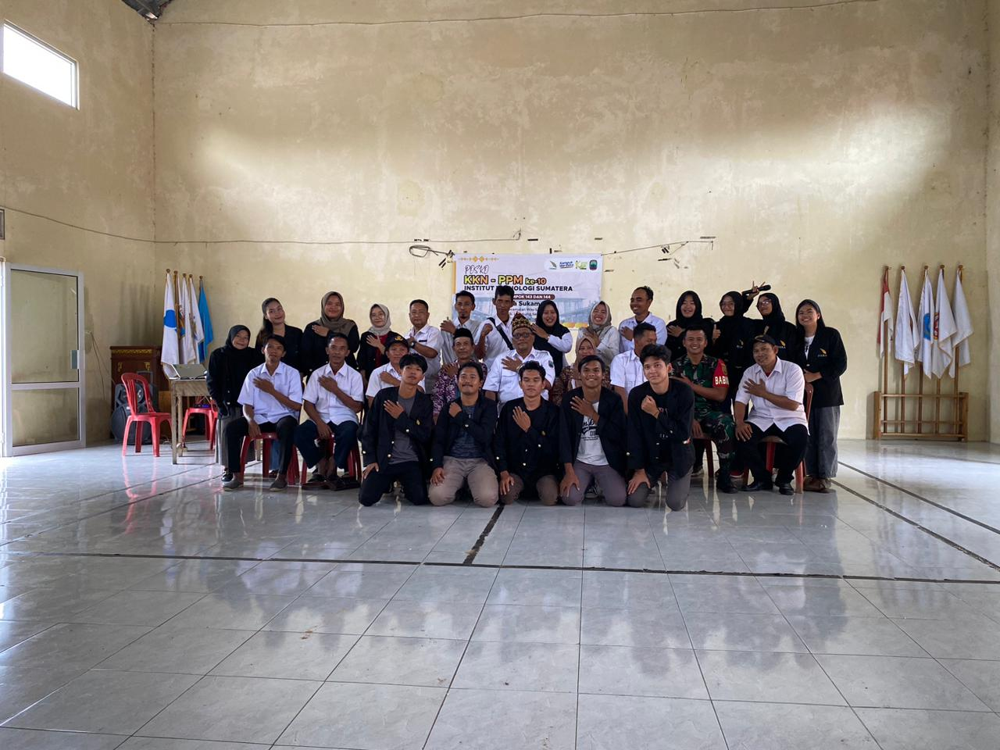
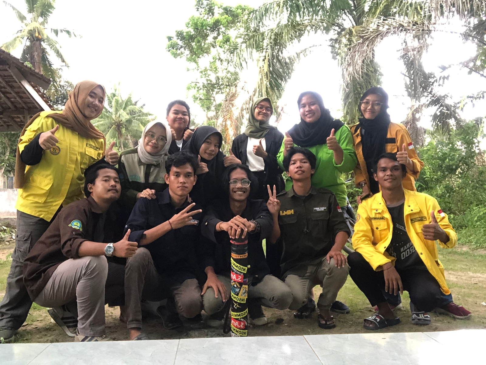

Desa Sukamaju terletak dikecamatan Way Sulan Kabupaten Lampung Selatan dengan jumlah penduduk sebanyak 2430 jiwa. Sebelum dilakukan Kuliah Kerja Nyata pada desa Sukamaju, perlu dilakukan survey secara langsung. Survey dilakukan pada tanggal 24 November 2022 didampingi dengan Dosen Pembimbing Lapangan. Setelah dilakukannya survey, didapatkan informasi mengenai desa yang dapat diangkat menjadi program kerja kelompok dan individu. Dalam menentukan program kerja, Kelompok KKN 143 ITERA Periode ke-10, memilih program kerja yang dapat memberikan dampak bagi masyarakat luas.

KKN 143 Sukamaju
Absurd
Tentang KKN 143

Anggota KKN 143

Aulia | TG'20
Chandra | AR'20
Enjelina | BIO'20
Desri | TL'20
Harry | TA'20
Aning | GL'20
Arta | PWK'20
Gita | ARL'20
Basrunki | IF'20
Ikhsan | TL'20
Annida | KI'20
Anaz | TIP'20
Eltri | GL'20